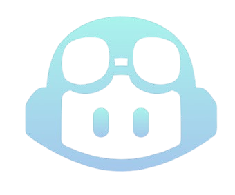

Lenge før min tid satt utviklere og matet datamaskiner med hullkort — fysiske kort med hull som representerte instruksjoner. Hver rad var en kommando. Feil hull, feil program. Generasjonen etter tok steget til assembler: kryptiske, men presise instruksjoner direkte til prosessoren. MOV, ADD, JMP — ett steg om gangen, i maskinens eget språk.
Da jeg studerte til dataingeniør på slutten av 90-tallet, lærte vi assembler et kort semester. Det føltes allerede da som et tilbakeblikk — noe man burde ha sett, men ikke noe man ville tilbake til. Vi hadde jo høynivåspråk, objektorientering og abstraksjon. Likevel satt det igjen noe viktig: kjernen i det vi gjør har alltid handlet om å gi presise instruksjoner. Formatet har endret seg — fra hull i papp, via maskinkode og programmeringsspråk, til dagens naturlige språk mot AI-agenter — men kravet til presisjon og intensjon har aldri forsvunnet.
I løpet av snart tre tiår som systemutvikler har jeg opplevd en jevn kontinuerlig forbedring i hvordan vi bygger programvare og systemer. Vi har gått fra manuelle prosesser, Word‑baserte deploy‑instruksjoner og vannfall med kravspesifikasjon og release hvert halvår. Så kom Agile, DevOps, skyplattformer, containere og infrastruktur som kode. Dette har lenge vært en evolusjon — et sakte, men stødig skifte mot mer automatisering og bedre samarbeid.
Da jeg i 2012 gikk fra en klassisk utviklerrolle til også å jobbe med infrastruktur og drift, i «DevOps-tiåret», fikk jeg min første digitale kollega. Da var det ikke en instruert AI-agent, men PowerShell. Alt som tidligere var manuelt — konfigurasjoner og rutiner — skulle automatiseres. Fra serveroppsett til rolling deployment. Lite visste jeg da om at jeg snart skulle få digitale hjelpere — med «superkrefter»!
De siste par årene er alt endret – raskt!
Tidlig i 2024 begynte teamet mitt og jeg å teste GitHub Copilot — forsiktig, i «ask mode». Det virket ikke sannsynlig at GitHub Copilot kunne bidra så mye — vi har da tross alt mange års erfaring med å skrive god kode selv. Men ganske raskt så vi at den dekket alt vi pleide å hente fra dokumentasjonen, Google og Stack Overflow. Selv om vi så den kunne bidra med feil og forvirringer i tidlige versjoner, har den blitt mye bedre bare i første del av 2026. Uten at man har tenkt mye på det, brukes AI-verktøy mer og mer, som en naturlig del, både til problemløsing, forvaltning og videreutvikling.

Fra høsten 2025 kom agentene for fullt: AI‑verktøy som ikke bare foreslår kode, men som planlegger, skriver, tester og refaktorerer — på tvers av filer og kontekster. Produktivitetsøkningen er ikke lineær lenger, men eksponensiell. Hvor er vi nå?
Vi skriver i praksis ikke kode selv lenger. Det som startet gradvis, som verktøystøtte, er nå vår nye arbeidsform.
Kvalitet og vedlikeholdbarhet

Teknisk gjeld er et kjent tema. Den gode nyheten er at agenter verken prokrastinerer eller gruer seg for å ta tak i den. De må selvfølgelig få tydelige instruksjoner — mennesker må fortsatt forstå og prioritere behovet og sette retningen.
Kjenner du igjen følelsen av usikkerhet når du skal endre eldre kode, skrevet av noen som sluttet for fem år siden? Kode som «ingen tør å ta i»? Med dagens AI‑verktøy er det mindre skummelt. Nøkkelen ligger i tilnærmingen:
Det er fristende å instruere: «Skriv om denne gamle drittkoden!»
Men en bedre tilnærming er: «Start med å skrive tester som gjør det lettere å forstå hva denne koden egentlig gjør.»
Når agenten først har etablert testene, er det mye tryggere å gå videre med refaktorering, opprydding og oppgradering av rammeverk. Og i beste fall finner du ubrukte funksjoner eller hele moduler som kan slettes — lykke!
Claude Code — dette endrer alt
Etter gradvis økt bruk av AI-verktøy til vedlikehold, problemløsning og videreutvikling av eksisterende kodebase, og stadig mer «buzz» i tech- og IT-medier og blant kollegaer, ville jeg teste å bygge noe med AI på fritiden. Fra bunnen av, uten de naturlige begrensningene i et enterprise-miljø.
Etter noen få timer hands-on med Claude Code hadde jeg fått til mye mer enn jeg hadde forestilt meg. Jeg innså at med gode instruksjoner og forståelse kan alt bygges på denne måten. Vi trenger ikke være redde for sikkerhetsfeil eller ytelsesproblemer — så lenge man instruerer rett. Gamle diskusjoner om språk og tech-stack er ikke like viktige lenger. Java eller C#, JavaScript-rammeverk — Python, Java eller Kotlin, funksjonelt som F# eller Scala? Velg noe teamet kan og som er mye brukt. Teamet trenger ikke være eksperter, men forstå koden. Nå ber man AI forklare eventuelle forskjeller fra et språk man kjenner bedre — og lærer kjapt. Koding er rett og slett løst! Det som gjenstår er å vite hva som skal bygges — hvorfor, og hvordan.
Nøyaktige instruksjoner – den nye koden
Når agenter får ansvar for stadig større deler av utviklingsløpet, endres vårt ansvar. Det som tidligere var kode vi skrev selv, er nå intensjoner og rammer vi beskriver. For agenter er presisjon alt:
- Gode instruksjoner gir gode resultater
- Uklare instruksjoner gir uforutsigbar atferd
Å gi presise beskrivelser av hva som skal lages, hvordan det skal testes og hvilke grenser som gjelder med hensyn til sikkerhet og compliance, har blitt en sentral kompetanse i moderne utvikling.
Klar for endringen?

Stillingsannonsene spør etter frontend-, backend- eller fullstack-utviklere. Jeg har sett «AI-utvikler» — hva er det? Om det er interessant vil man uansett lese og finne ut i stillingsbeskrivelsen. Vi vil sikkert se stillingsannonser hvor det søkes etter «Systemdirigent», «AI-orkestrator» og lignende, men jeg hadde nok lest «Erfaren utvikler»-annonsen først. For det som virkelig teller er det samme som før: domeneforståelse, systemtenkning og evnen til å løse de riktige problemene. En som kan verktøyene men mangler oversikten, kan bygge fort — men kanskje også i feil retning.
Vi er de samme problemløserne, med den samme erfaringen og domeneoversikten. Det som endrer seg er verktøyene — og med dem, hva vi bruker tiden vår på:
- Setter arkitektur, retning og standarder
- Formulerer presise instruksjoner til agenter
- Sikrer kvalitet, sikkerhet og sporbarhet
- Løser problemer agentene ikke kan forstå
- Vurderer risiko og konsekvenser
- Sørger for at alt henger sammen i et robust system
Agentene gir oss fart. Erfaring gir dem trygghet og retning.
Nye arenaer for erfaringsdeling
Men hva med de som ennå ikke har rukket å bygge opp denne erfaringen? Når agentene skriver mesteparten av koden, mister nye utviklere den naturlige læringsarenaen som vi hadde — å skrive kode, gjøre feil, debugge og gradvis forstå systemer innenfra. Domeneforståelse, systemtenkning og evnen til å stille de riktige spørsmålene kommer ikke av seg selv.
Et svar mange av oss peker på er mob-instruering av agenter — at erfarne og nye utviklere sitter sammen og instruerer agenter i fellesskap. Ikke som tradisjonell parprogrammering der man deler et tastatur, men som en felles øvelse i å tenke høyt: Hva skal vi be agenten om? Hvorfor denne tilnærmingen og ikke en annen? Hva bør vi teste? Hva kan gå galt? Når nye utviklere ser hvordan erfarne utviklere formulerer instruksjoner, vurderer resultater og stiller oppfølgingsspørsmål, lærer de den tenkemåten som koden alene ikke lenger kan lære dem.
Rollene må fordeles på nytt
Gjennom karrieren har jeg hatt mange roller: utvikler, systemarkitekt, reviewer, test- og kvalitetsansvarlig, DevOps-ansvarlig, IaC- og CI/CD-bygger, og problemløser når komplekse feil eller skjulte avhengigheter dukket opp.
Jeg liker utfordringer og tar gjerne på meg oppgaver som ikke er bare koding. I dag kan moderne AI‑agenter ta over mye av det mekaniske og repeterbare arbeidet. Analyse, koding, dokumentasjon, mønstergjenkjenning og forslag til forbedringer skjer på sekunder.
Tenk deg en agent instruert til å sjekke loggene, finne de tregeste API-kallene siste uke hvor det er mer enn tusen kall, se på koden og lage en Pull Request med forslag til endring hvor det kan være mye å forbedre, og varsle teamet i en kanal på Slack. En slik oppgave kunne lett tatt en utvikler en halv dag. Agenten gjør det på minutter.
Da gjenstår spørsmålet: hva er egentlig vår jobb nå?
| Område | Agent tar seg av | Vi må fortsatt eie |
|---|---|---|
| Kodeproduksjon | Genererer kode, tester og refaktoreringsforslag | Setter arkitektur, retning og kvalitetsnivå |
| Dokumentasjon | Skriver utkast, kobler informasjon, oppsummerer | Tilfører kontekst, historikk og domeneinnsikt |
| CI/CD og IaC | Lager YAML‑filer, Terraform‑forslag og strukturer | Definerer standarder, sikkerhet og governance |
| Systemarkitektur | Foreslår mønstre | Tar beslutningene som krever systemforståelse og erfaring |
| Problemløsning | Analyserer feilmeldinger og peker på mulige retninger | Vurderer prioritet, risiko og helhet |
| Kvalitet og sikkerhet | Foreslår tester og kontroller | Eier risikoen og kvaliteten |
Jeg har ikke sett større endring i hvordan vi jobber, eller lært mer nytt, enn siste del av 2025 og starten på 2026. Utviklerrollen er ikke borte — den er bare omdefinert.
Kilder og inspirasjon
Preparing your team for agentic software development life cycle – ThoughtWorks
2026 Agentic Coding Trends Report – Anthropic
Denne artikkelen er satt sammen i samarbeid med Claude Code — instruert av meg.
Bildene i denne artikkelen er ikke AI-generert, men hentet fra egen «kamerarull». Regnbuen er i min hjemby. Båten har jeg gått forbi på vei til toget som tar meg til jobb. Den er «ryddet» bort nå, men har sørget for at jeg har tenkt daglig på teknisk gjeld. Katten er også ekte, og bor hjemme hos meg.